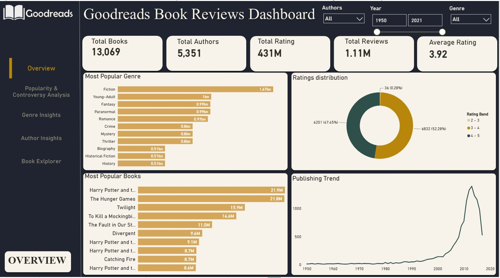

A five-page interactive Power BI dashboard exploring 13,069 books from Goodreads, covering 5,351 authors and over 431 million ratings. Each page answers a different question — overall volume, popularity vs. controversy, genre performance, author rankings, and a searchable book lookup — with global slicers for author, publication year, and genre applied consistently across every page.

Sets the scene with top-line KPIs and four supporting visuals: a genre ranking by total ratings (Fiction leads at 1.67bn), a ratings-distribution donut split into low/mid/high bands, the ten most-rated books (Harry Potter and The Hunger Games lead by a wide margin), and a publishing-trend line showing a sharp rise in output through the 2000s and 2010s before tapering off after 2015.

Popularity Score of 21.88M, calculated from a custom DAX measure combining rating volume and engagement — well ahead of The Hunger Games (21.8M) and Twilight (15.9M).
Scored 0–0.5, where 0.5 means an even split between lovers and haters regardless of a book's size. Titles like Zombie Blondes and Codex top the list at 0.50, each sitting at a flat 3.00 average rating despite very different popularity levels.
A paired comparison of top books by popularity versus by raw ratings count shows the two rankings mostly agree — but a combo chart of ratings against reviews per title reveals some books attract disproportionately more written reviews relative to their rating count, hinting at stronger reader engagement beyond a star rating.

Across 16 tracked genres, Fiction is the most popular by total ratings, but Comics and Graphic novels score highest on average rating (4.02) despite far lower volume — the classic popularity-vs-quality gap. A 100% stacked bar breaks down the 1–5 star distribution per genre, and a trend line tracks genre popularity over time, showing Fiction and Young-Adult both climbing sharply from the mid-2000s before the whole market cools off after 2015.
- Most popular genre by volume: Fiction
- Highest rated genre: Graphic (4.02 avg)
- Genre with the most ratings and reviews: Young-Adult

J.K. Rowling is the most popular author by a wide margin (72.44M popularity score, more than double the next author). A treemap of the most prolific authors is shaded by average rating so volume and quality can be read together at a glance — Stephen King leads on raw book count (53 titles), while Zoraida Cordova and Hiromu Arakawa top the ratings-count and average-rating leaderboards respectively.
| Metric | Leader |
|---|---|
| Most Popular Author | J.K. Rowling |
| Most Books Published | Stephen King (53) |
| Most Ratings Received | Zoraida Cordova |
| Highest Average Rating | Hiromu Arakawa |

A dedicated lookup page: search for any of the 13,069 titles and see its cover, author, genre, and publication year, alongside four calculated metrics generated by the report's DAX layer — Controversy Score, Popularity Score, Engagement Score, and Average Rating — recalculated live as the search changes.
End-to-end workflow from raw Goodreads export to a five-page interactive report, including two custom-built DAX metrics (Controversy Score and Popularity Score) not present in the source data, and a searchable book-lookup page built with drill-through and dynamic card visuals.